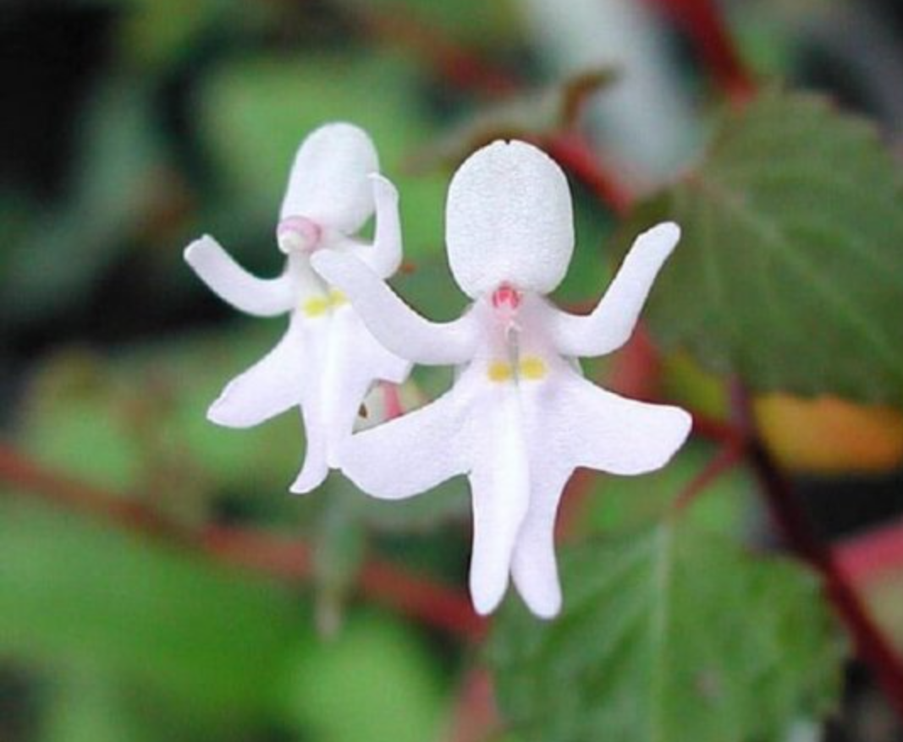

უცნაური მცენარეები

ჰუკერის ტუჩები
როგორც ვხედავთ ამ სურათში არის მცენარე
რომელიც ძალიან გავს ლამაზ წითელ პომადიან
ტუჩებს, ამ მცენარეს ჰქვია ჰუკერის ტუჩები
მაიმუნის ორქიდეა
ამჯერად ეს მცენარე მაიმუნის სახეს ჰგავს,ამ მცენარეს
ფოთლები აქვს რომელსაც ფორთოხლის სურნელი აქვს.
ამ მცენარეს მაიმუნის ორქიდეა ან მაიმუნის დრაკულა ჰქვია.
დართ ვეიდერი
ეს მცენარე ჰგავს ფილმის "ვარსკვალების ომის" პერსონაჟს
ჰგავს.არ ვარ დარწყმუნებული ამ ყვავილის ნამდვილი
სახელი დარტ ვეიდერია მაგრამ მაინც საინტერესო
მცენარეა.
ორქიდეა ვეფხვი
ამ ყვავილის ცენტრი ვეფხვის თავი იმალება, ისეათია
თითქოს შემოგახტება ნებისმიერ წამს და ღრიალს დაიწყებს.

მოცეკვავე გოგონები
კიდევ ერთი მოცეკვავეს ჯგუფი მოვიდა, მე რომ მკითხოთ
უფრო ანგელოზს ან ფერიას გავს ვიდრე მოცეკვავეს.
ამ პროექტში ნახსენები მცენარეები შეიძლება ნამდვილი
არ იყოს, დარწყმუნებული არ ვარ რომელი ნამდვილია ან
რომელია ტყუილი. მადლობა ყურადღებისთვის!